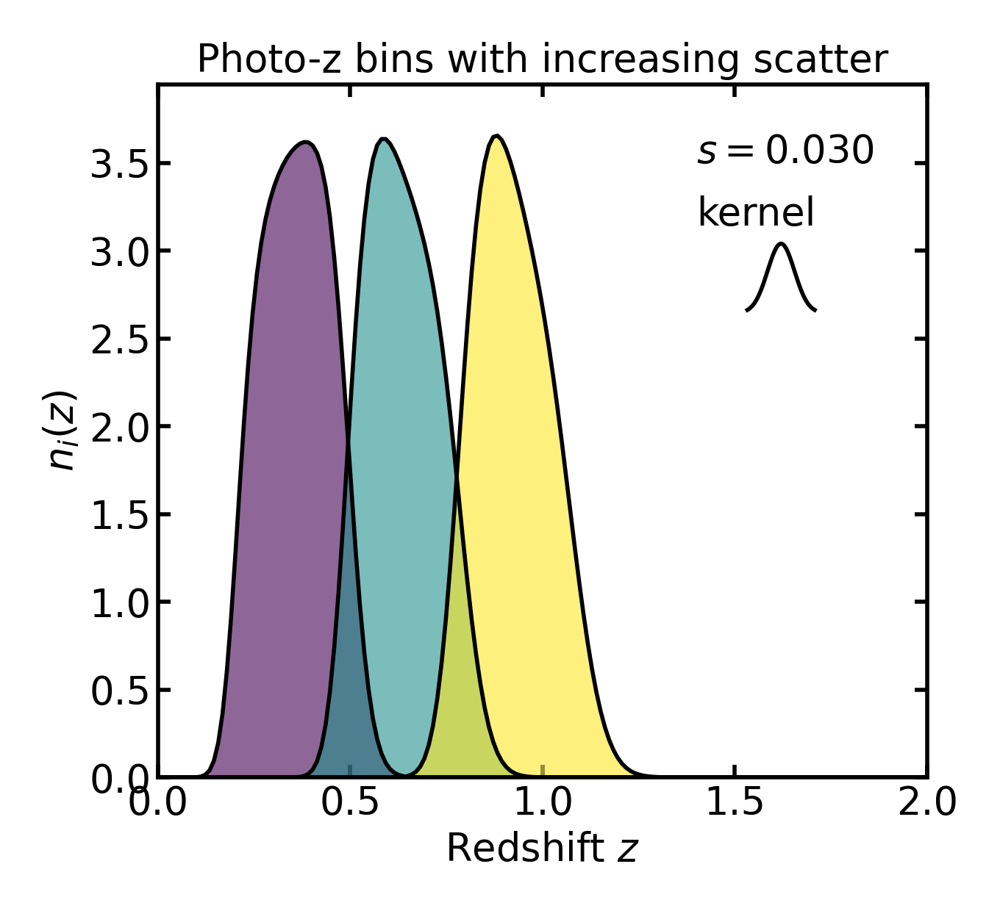
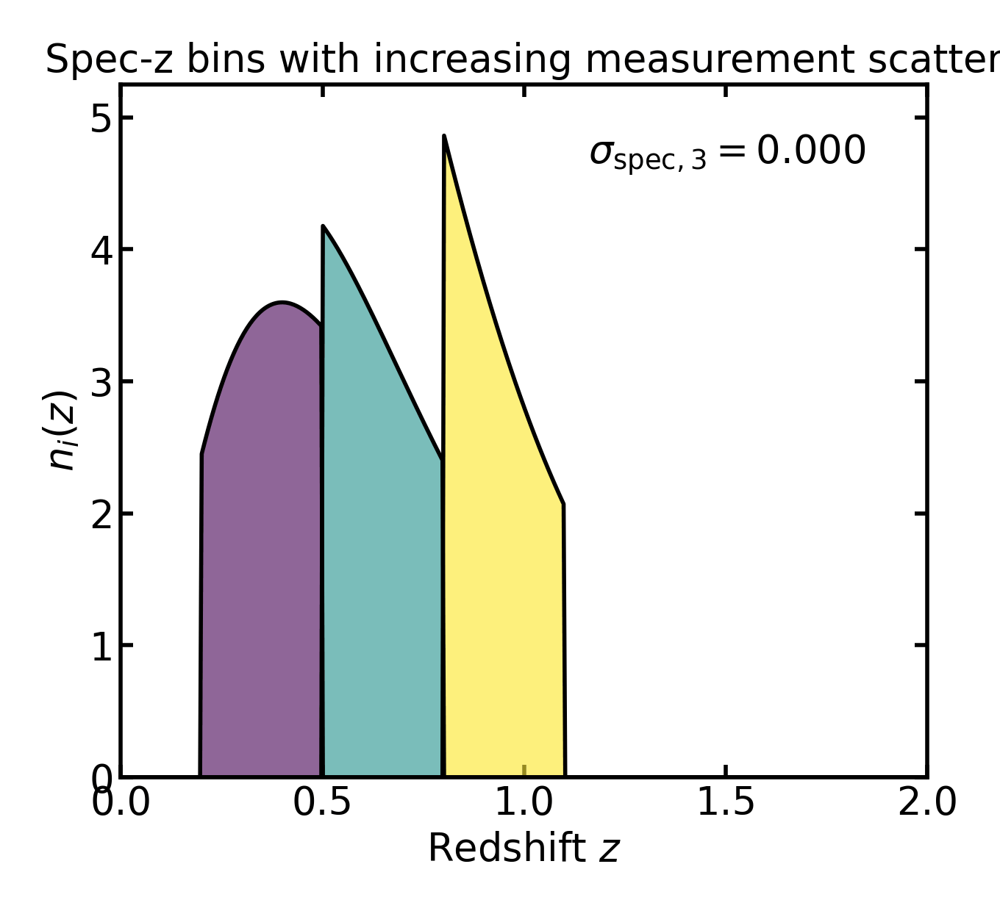

Redshift uncertainties#
Redshift uncertainties#
This section describes how Binny models uncertainty in tomographic redshift binning.
For a broader introduction to tomography and redshift-selection models, see Tomography.
Binny supports two broad classes of redshift uncertainty treatment:
Photometric-redshift uncertainties for photometric-redshift uncertainties, where bins are defined in observed redshift and mapped onto the true-redshift grid through a probabilistic assignment model;
Spectroscopic-redshift uncertainties for spectroscopic-redshift uncertainties, where bins are defined in true redshift and may be modified by completeness losses, bin-to-bin response effects, catastrophic reassignment, or measurement scatter.
In both cases, the returned tomographic bins are evaluated on a common true-redshift grid \(z\).
Overview#
Binny constructs tomographic bins by applying an effective redshift-selection model to a parent redshift distribution \(n(z)\). Schematically,
where
\(n(z)\) is the parent redshift distribution,
\(n_i(z)\) is the returned tomographic bin for bin \(i\),
\(S_i(z)\) is the effective selection function.
The interpretation of \(S_i(z)\) depends on the redshift model:
in the photo-z case, \(S_i(z) = P(i \mid z)\), the probability of assigning an object at true redshift \(z\) to observed bin \(i\);
in the spec-z case, \(S_i(z)\) is a true-redshift selection, possibly followed by an observed-bin response model.
Conceptually, the distinction is:
photo-z tomography is probabilistic from the outset;
spec-z tomography starts from deterministic true-redshift bins and then optionally adds observational response effects.
Uncertainty models#
The pages below describe the uncertainty models implemented in Binny.
{kind=link}

Photometric redshift tomography assigns galaxies to bins probabilistically. These models capture scatter, bias, and catastrophic outliers in the mapping between observed and true redshift.
{kind=link}

Spectroscopic tomography begins with deterministic true-redshift bins and may include additional observational effects such as incompleteness, bin reassignment, or measurement scatter.